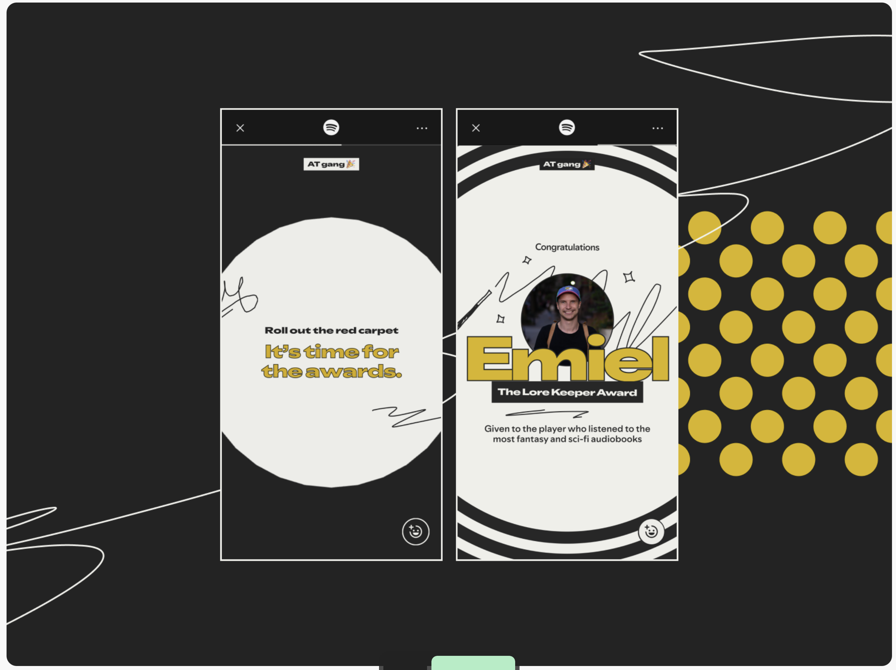
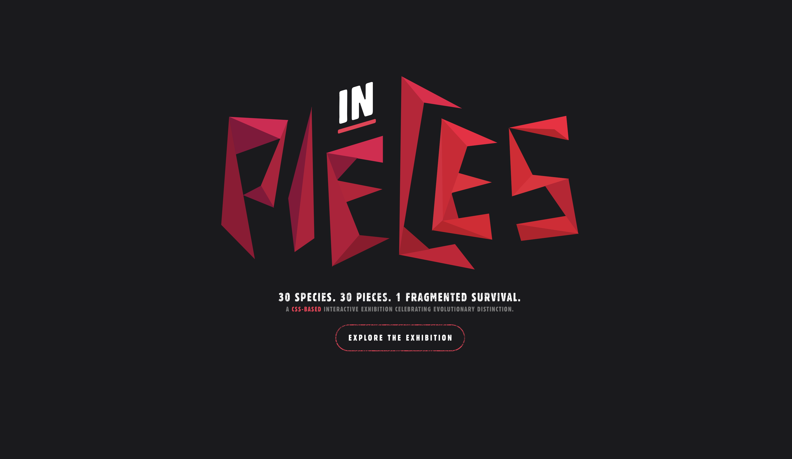
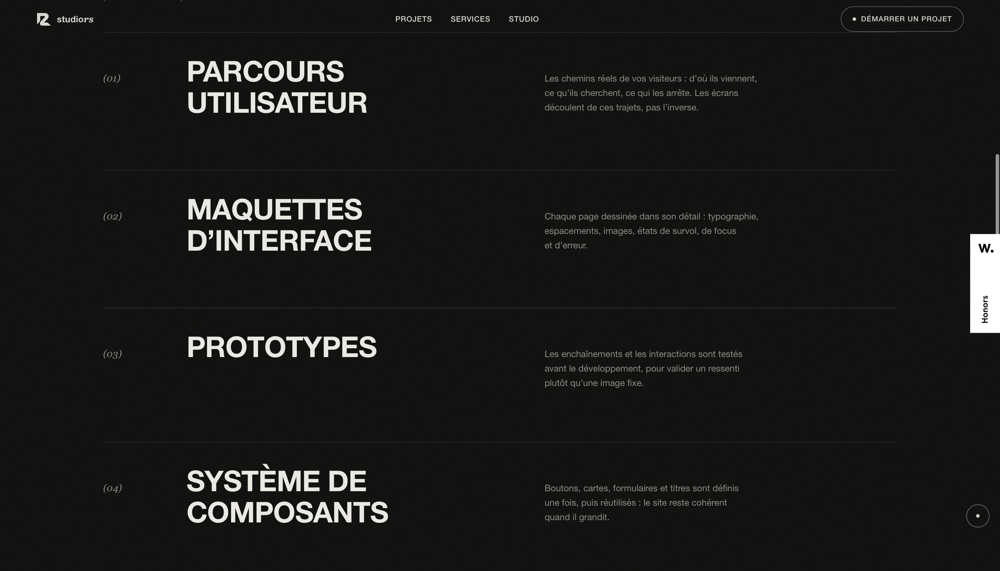
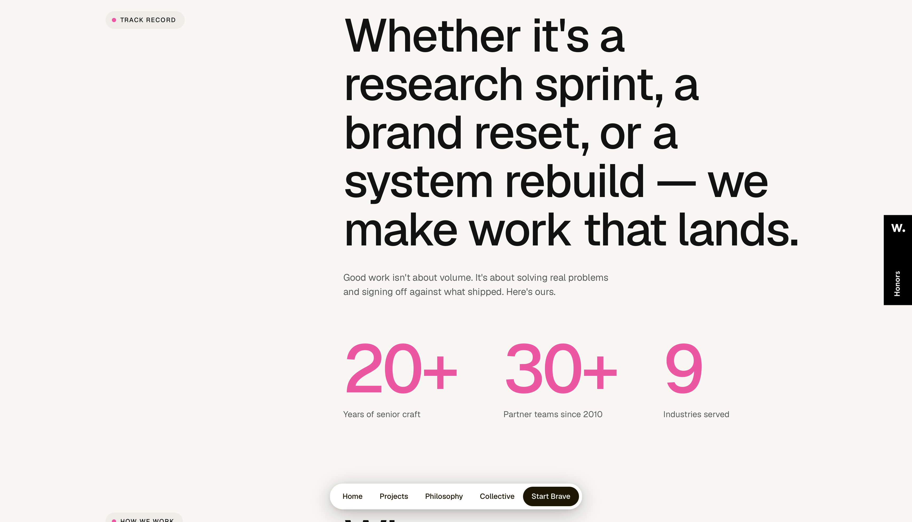
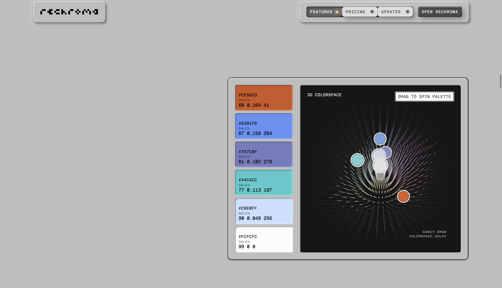

Historial de escucha
Horas escuchadas por mes (oct 2025 – oct 2026). Horas = msPlayed / 3.600.000.
Una web personal con mis datos de escucha de Spotify y un apartado sobre mi salud auditiva.
Pregunta de investigación: ¿Cómo está mi salud auditiva durante un año entero?
Público: jóvenes de 18 a 30 años.
Ocho referentes analizados en Figma: captura, enlace y lo que me llevo de cada uno.

Qué me llevo: Las animaciones y la forma de explicar la información, para que sea fácil de entender y divertido de ver.
Qué me llevo: Las imágenes como elemento principal, con los textos sobre fondo blanco, y una misma estética en todo el sitio.

Qué me llevo: La estética minimalista y, sobre todo, la parte final con las 30 piezas en forma de círculo.

Qué me llevo: La organización por secciones: con poco detalle es muy visual y fácil de entender.

Qué me llevo: La forma de organizar la información y crear un logotipo para cada tema.
Qué me llevo: Dar importancia a la información con simplificación, pero bien estructurada.
Qué me llevo: Simplificar la información y que el usuario tenga que hacer clic para interactuar.

Qué me llevo: La interacción con las imágenes y la fluidez: el resultado es instantáneo.
Horas escuchadas por mes (oct 2025 – oct 2026). Horas = msPlayed / 3.600.000.
| Canción | Artista | Reproducciones |
|---|
Número de reproducciones de cada artista por mes, de los 6 artistas más escuchados del año. Cada punto cuenta todas las escuchas de ese artista en ese mes que aparecen en tu historial, también las de menos de 30 segundos. Spotify solo cuenta como stream las de al menos 30 segundos (según su ayuda para artistas), así que estas cifras pueden ser algo mayores que sus streams oficiales. No es tiempo: las horas están en el apartado Historial.
El riesgo auditivo depende del nivel sonoro, de la duración y de la frecuencia de la exposición. Esta información es orientativa: no sustituye una audiometría ni el consejo de un profesional.
| Guía | Nivel | Tiempo máximo | Intercambio | Uso |
|---|---|---|---|---|
| OMS/ITU H.870, Modo 1 (adultos) | 80 dB(A) | 40 h/semana | Dosis semanal 1,6 Pa²h; +3 dB reduce a la mitad | Escucha personal no laboral |
| OMS/ITU H.870, Modo 2 | 75 dB(A) | 40 h/semana | 0,51 Pa²h/semana | Niños, adolescentes o criterio conservador |
| NIOSH | 85 dB(A) | 8 h/día | 3 dB: +3 dB = mitad del tiempo | Prevención laboral; criterio conservador |
| OSHA | 90 dB(A) | 8 h/día | 5 dB: +5 dB = mitad del tiempo | Límite laboral EE. UU.; menos conservador |
| Directiva 2003/10/CE | 80 y 85 dB(A) acción; 87 dB(A) límite | 8 h/día o semana | TWA normalizado a 8 h | Marco laboral europeo |
La Directiva europea fija LEX,8h de 80 dB(A) como valor inferior de acción, 85 dB(A) como superior y 87 dB(A) como límite máximo, además de límites de presión pico de 112, 140 y 200 Pa.
T(L) = 8 / 2(L − 85)/3 horas.
D = Σ [tᵢ / T(Lᵢ)] × 100 %.
TWA = 85 + 3 × log₂(D / 100).
Ejemplo: 2 h a 90 dB(A) y 1 h a 96 dB(A). A 90 dB(A) el tiempo máximo es 2,52 h, así que 2 h suponen un 79,4 %. A 96 dB(A) el tiempo máximo es 0,63 h, así que 1 h supone un 158,7 %. Dosis total: 238,1 %. TWA ≈ 88,8 dB(A). Supera el 100 % de NIOSH.
T80(L) = 40 / 2(L − 80)/3 horas por semana.
CSD = Σ [tᵢ / T80(Lᵢ)] × 100 %.
Ejemplo: 1 h al día durante 5 días a 85 dB(A) = 5 h por semana. T80(85) = 12,6 h por semana. CSD = 5 / 12,6 × 100 = 39,7 %. Usa aproximadamente el 40 % del permiso semanal adulto.
No existe una correspondencia universal entre porcentaje de volumen y decibelios. El mismo ajuste puede dar niveles distintos según el teléfono, el auricular, el ecualizador, el códec, el ajuste del auricular y la música. La OMS recomienda ajustar el volumen en un entorno tranquilo y no superar el 60 % del máximo.
| Ajuste o medición | Nivel aproximado | Fiabilidad |
|---|---|---|
| 60 % del máximo, en ambiente tranquilo | 63–67 dB(A) en estudio con seis smartphones | Medición concreta, limitada a modelos y condiciones |
| Primer «paso de riesgo» del móvil | 84,1–92,4 dB(A) | Medición experimental; varía entre modelos |
| Volumen máximo de seis smartphones | 105,7–113,1 dB(A) | Medición experimental |
| Auriculares intraaurales al máximo | 88–113 dB(A) | Rango de mediciones recogido por la OMS |
| Dispositivos personales en general | 75–136 dB(A) máximo | Rango amplio; no sirve para un caso concreto |
| Uso habitual de usuarios | 75–105 dB | Estimación recogida por la OMS |
| Nivel estimado | Tiempo máximo diario |
|---|---|
| 85 dB(A) | 8 h |
| 88 dB(A) | 4 h |
| 91 dB(A) | 2 h |
| 94 dB(A) | 1 h |
| 97 dB(A) | 30 min |
| 100 dB(A) | 15 min |
| 103 dB(A) | 7,5 min |
| 106 dB(A) | 3,75 min |
| Nivel estimado | Tiempo máximo semanal |
|---|---|
| 80 dB(A) | 40 h |
| 83 dB(A) | 20 h |
| 86 dB(A) | 10 h |
| 89 dB(A) | 5 h |
| 92 dB(A) | 2,5 h |
| 95 dB(A) | 1,25 h |
| 98 dB(A) | 37,5 min |
Consulta a un médico o audiólogo si el zumbido o el oído tapado dura más de 24–48 horas, si aparece de forma súbita, si hay pérdida auditiva evidente, dolor, vértigo o descarga. La pérdida auditiva inducida por ruido suele ser gradual e irreversible.
| Año | Fuente | Dato |
|---|---|---|
| 2015 | OMS | 1.100 millones de jóvenes de 12–35 años en riesgo por escucha insegura; cerca del 50 % se expone a niveles inseguros con dispositivos personales y 40 % en ocio. |
| 2015 | OMS | En EE. UU., la pérdida auditiva en adolescentes de 12–19 años pasó del 3,5 % en 1994 al 5,3 % en 2006. |
| 2019 | OMS | Más de 1.000 millones de jóvenes de 12–35 años en riesgo por exposición recreativa a sonidos fuertes. |
| 2022 | OMS | Más de 1.000 millones de personas de 12–35 años en riesgo por música y sonidos recreativos prolongados o excesivos. |
| 2018 | Kim y Han | Seis smartphones: máximos de 105,7–113,1 dB(A); a 60 % de volumen, 63–67 dB(A). |
| 2015 | OMS | Salida de dispositivos personales: 75–136 dB; uso habitual: 75–105 dB. |
Esta información es exclusivamente orientativa y educativa. No diagnostica, no mide el nivel sonoro real y no sustituye una prueba auditiva, una valoración médica ni el asesoramiento de un audiólogo.
Pendiente: la calculadora personal, en la que el visitante introduce su tiempo de escucha semanal y su tipo de auricular.
Los datos van del 26 de octubre de 2025 al 27 de octubre de 2026, así que «2025» solo cubre octubre, noviembre y diciembre. En ese periodo escuché música de 681 artistas distintos y sumé 1.004,7 horas de escucha.
Mis datos de escucha no indican el género de cada canción. Lo más cercano es la lista de intereses musicales que Spotify me asigna en sus inferencias: pop, trap, hip-hop, old school hip-hop, rock, funk brasileño, indie, soul, punk, latino, R&B y reguetón. Son lo que Spotify cree que me gusta, no un análisis de mis canciones.
Mayo de 2026, con 137,5 horas. Es el mes en el que más tiempo escuché música.
Ordenado por horas de escucha.
| Mes | Artista | Horas |
|---|---|---|
| oct 2025 | CA7RIEL & Paco Amoroso | 6,5 h |
| nov 2025 | Young Miko | 33,0 h |
| dic 2025 | Young Miko | 13,3 h |
| ene 2026 | Young Miko | 9,3 h |
| feb 2026 | Alejo | 6,7 h |
| mar 2026 | Munic HB | 6,5 h |
| abr 2026 | ELENA ROSE | 11,9 h |
| may 2026 | Eladio Carrión | 32,2 h |
| jun 2026 | Young Miko | 9,6 h |
| jul 2026 | Young Miko | 8,6 h |
| ago 2026 | Conep | 3,1 h |
| sep 2026 | Natiruts | 3,7 h |
| oct 2026 | Lucho RK | 8,9 h |
Tomo el 60 % del volumen del móvil, que la OMS recomienda no superar, y el rango de 63–67 dB(A) de la medición del estudio de Kim y Han. Ese dato sigue pendiente de comprobar con la fuente original.
Fórmula OMS/ITU (modo 1, adultos): T(L) = 40 / 2(L − 80) / 3 horas por semana.
A 67 dB(A): 40 / 2−13/3 ≈ 806 horas por semana. A 63 dB(A): ≈ 2.032 horas por semana.
Fórmula NIOSH (criterio conservador): T(L) = 8 / 2(L − 85) / 3 horas al día.
A 67 dB(A): ≈ 512 horas al día. A 63 dB(A): ≈ 1.290 horas al día.
Con ese volumen, el tiempo no es un límite real: supera de sobra cualquier semana o día. El límite empieza a importar cuando el nivel sube: la OMS fija 40 horas semanales a 80 dB(A).
Lo que más me importa de esta web es que la gente tome conciencia de su salud auditiva. Somos jóvenes, pero todos envejecemos, y el oído empeora con los años. Usar bien los auriculares es una forma de cuidarlo desde ahora.
Esta web también me sirve a mí. Al ver cuántas horas escucho, puedo regularme, y también el volumen. Muchas veces no nos damos cuenta de que tenemos el volumen muy alto. El oído se acostumbra a ese nivel y dejamos de notarlo, y así no llegamos a ver que puede traer problemas en el futuro.